18 years of sovereign recording, community stewardship, and prairie musicianship in Mandan, North Dakota. Operating from January 1996 through retirement on February 6th, 2014.
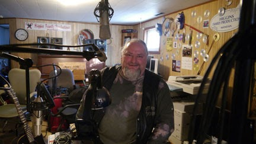
Featuring the iconic "Higgins Family Productions Mandan" oval plaque, acoustic upright piano, and recording mics.
“You two have so much nice gear—you should open a studio and offer local musicians a real service for a price they can actually afford.”
A family-run haven built on craftsmanship, hospitality, and dedication. Preserved directly from the original studio records:
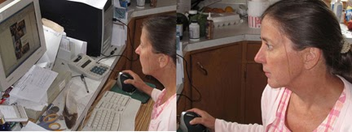
Studio and Project Manager overseeing the ongoing vision of Higgins Family Productions. Marion directed all custom graphics for CD/DVD products, Voice Over Work, Audio/Video Editing and Mixing, and assisted with manufacturing. The heart, warmth, and hospitality of the studio.
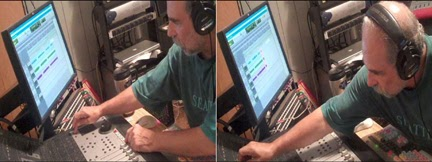
Audio/Video Editing, Mixing, Mastering and overall Engineering of projects, Technical Support, Voice Over Work, Web Page maintenance, and manufacturing of CD/DVD products. 63 years of musical songwriting and production experience.
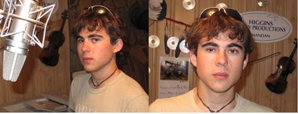
Voice Over Work, Technical Support, drum tracking, and assisted with the manufacturing of CD/DVD products. Keeping the beat and hardware running across decades of studio sessions.
Solo album artist, Voice Over Work, studio vocal tracking, and assisted with the manufacturing of CD/DVD products. Recorded multiple album sessions in the Mandan live room.
Double-speed (3.75 ips) 8-track cassette multitrack with dbx Type II noise reduction, locked via FSK sync tone on Track 8 to an Atari ST running C-Lab Creator/Notator. The Roland U-20 keyboard and U-220 1U rack module—expanded with multi-sample PCM ROM cards for punchy brass, crisp horn sections, and rock drums—provided the dynamic instrumentation engine behind epic compositions like Friday At 5.
The launch platform when Chuck Suchy urged Ron & Marion to open the studio. 1U rack breakout box with Focusrite preamps and ADAT optical lightpipe.
Dedicated hardware DSP silicon processing audio with zero latency. Featuring the legendary Avalon Vt-737sp vacuum tube class-A preamplifier/compressor and Genelec 8030 bi-amplified active studio monitors.
Tascam 688 / Atari Notator Master · 1990 Session
Recovered directly from the Higgins Family Productions website archives. Real sessions, artists, and live tracking moments inside the Mandan studio:
The iconic oval HFP sign surrounded by pressed gold discs, acoustic upright piano, and tracking mics.
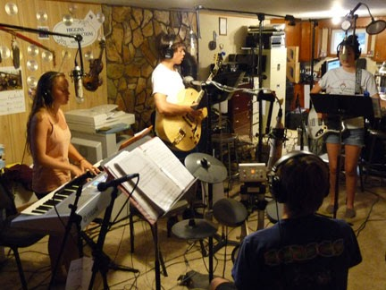
Drums, bass, electric guitar, and Yamaha keyboard all tracking together in session.
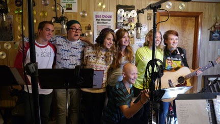
Seven young artists gathered around the condenser mic tracking vocal harmonies and acoustic guitar.
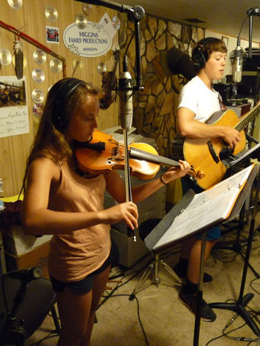
Violin tracking alongside rhythm guitar in front of the gold disc wall.
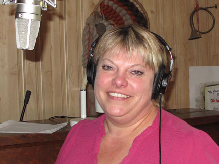
Tracking lead vocals in front of the shockmount studio condenser microphone.
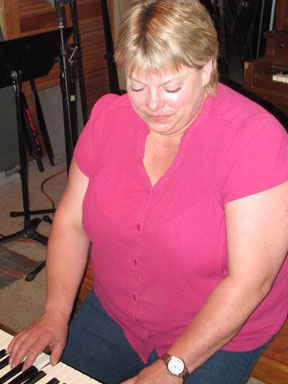
Tracking acoustic upright piano in the Mandan live room.
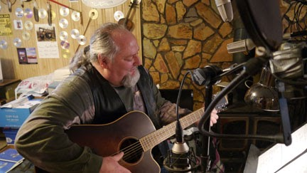
Acoustic guitar tracking with stereo pair microphones in front of the stone fireplace.
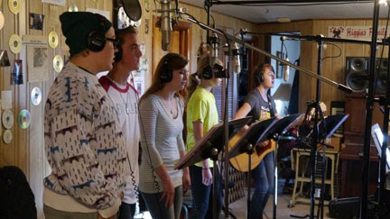
Regional youth group tracking multi-part vocal harmonies with headphones and music stands.
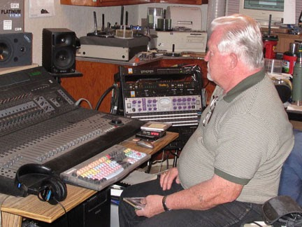
Sitting at the mixing console next to the Avalon preamp and Genelecs holding his finished project.
Over 18 years, 192 recorded artists, bands, church choirs, cowboy poets, and singer-songwriters walked through the doors of Higgins Family Productions in Mandan. Search or scroll the permanent record:
A living diary of what was tracked, mixed, and manufactured month by month during the peak studio years leading up to retirement in 2014:
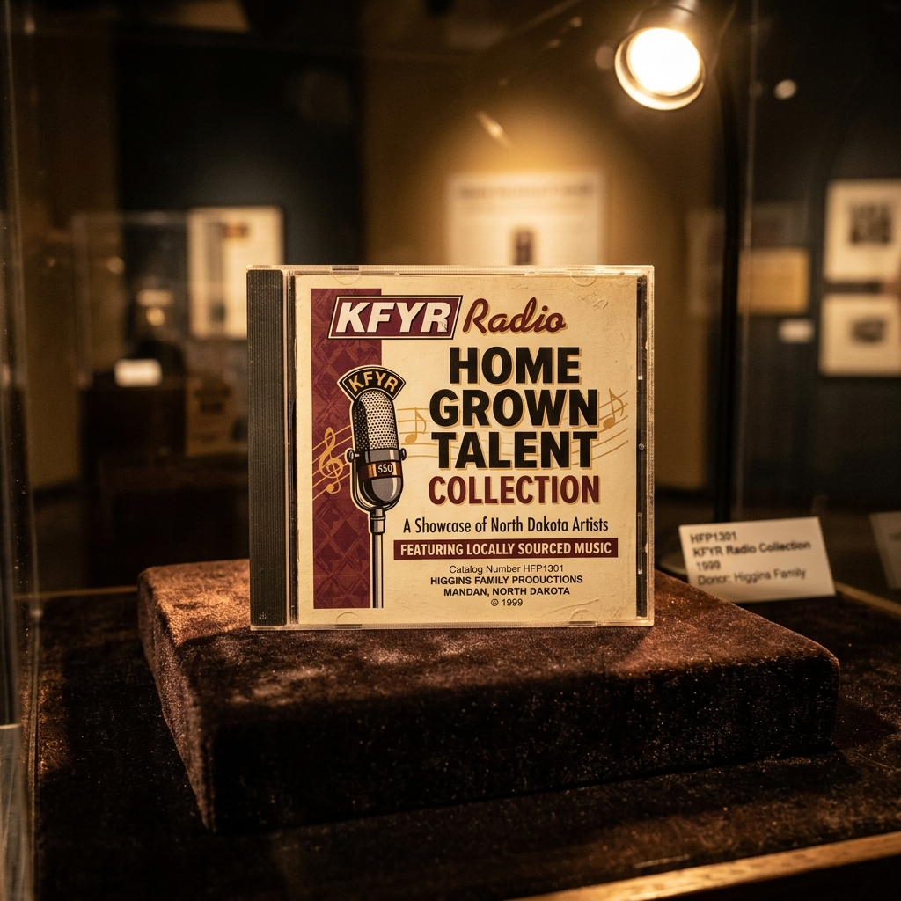
In 1999, Higgins Family Productions partnered with historic broadcast institution KFYR 550 AM in Bismarck/Mandan to master, manufacture, and release an official CD anthology celebrating the regional music broadcast across the Great Plains airwaves.
| Catalog Number | HFP1301 (Higgins Family Productions) |
| Release Year | 1999 |
| Format | Red Book Compact Disc (CD-DA) |
| Historic Cuts | Preston Schmidt ("Dill Pickle Rag"), Burning Geisha, Dakota Gospel & Folk Ensembles |
| Engineering | Ron Higgins / Higgins Family Productions Studio, Mandan ND |